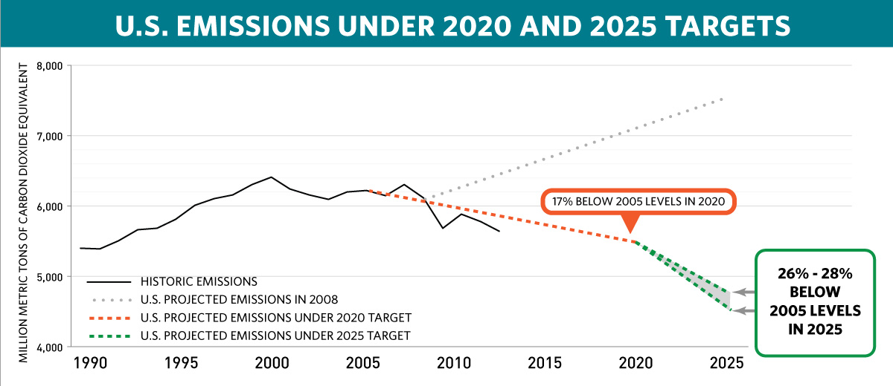

The United States is pleased to communicate its intended nationally determined contribution, as well as information to facilitate the clarity, transparency, and understanding of the contribution.
The United States is strongly committed to reducing greenhouse gas pollution, thereby contributing to the objective of the Convention. In response to the request in Lima to communicate to the secretariat its intended nationally determined contribution towards achieving the objective of the Convention as set out in its Article 2—the stabilization of greenhouse gas concentrations in the atmosphere at a level that would prevent dangerous anthropogenic interference with the climate system—the United States intends to achieve an economy-wide target of reducing its greenhouse gas emissions by 26-28 per cent below its 2005 level in 2025 and to make best efforts to reduce its emissions by 28%.

The target is fair and ambitious. The United States has already undertaken substantial policy action to reduce its emissions, taking the necessary steps to place us on a path to achieve the 2020 target of reducing emissions in the range of 17 percent below the 2005 level in 2020. Additional action to achieve the 2025 target represents a substantial acceleration of the current pace of greenhouse gas emission reductions. Achieving the 2025 target will require a further emission reduction of 9-11% beyond our 2020 target compared to the 2005 baseline and a substantial acceleration of the 2005-2020 annual pace of reduction, to 2.3-2.8 percent per year, or an approximate doubling.
Substantial global emission reductions are needed to keep the global temperature rise below 2 degrees Celsius, and the 2025 target is consistent with a path to deep decarbonization. This target is consistent with a straight line emission reduction pathway from 2020 to deep, economy-wide emission reductions of 80% or more by 2050. The target is part of a longer range, collective effort to transition to a low-carbon global economy as rapidly as possible.
The target reflects a planning process that examined opportunities under existing regulatory authorities to reduce emissions in 2025 of all greenhouse gases from all sources in every economic sector. A number of existing laws, regulations, and other domestically mandatory measures are relevant to the implementation of the target, which we detail in the information provided.
The United States intends to achieve an economy-wide target of reducing its greenhouse gas emissions by 26%-28% below its 2005 level in 2025 and to make best efforts to reduce its emissions by 28%.
Scope and coverage:
Gases:
The U.S. target covers all greenhouse gases included in the 2014 Inventory of United States Greenhouse Gas Emissions and Sinks: carbon dioxide (CO2), methane (CH4), nitrous oxide (N2O), perfluorocarbons (PFCs), hydrofluorocarbons (HFCs), sulfur hexafluoride (SF6), and nitrogen trifluoride (NF3).
Sectors:
The U.S. target covers all IPCC sectors.
Percentage of total greenhouse gas emissions:
The United States intends to account for 100 percent of U.S. greenhouse gas emissions and removals for the base year 2005 as published in the Inventory of United States Greenhouse Gas Emissions and Sinks, on a net-net basis.
Quantifiable information on the reference point, time frames, assumptions and methodological approaches including those for estimating and accounting for anthropogenic greenhouse gas emissions and removals:
Timeframe and reference point:
The U.S. target is for a single year: 2025. The base year against which the target is measured is 2005.
Accounting approach for land sector:
The United States intends to include all categories of emissions by sources and removals by sinks, and all pools and gases, as reported in the Inventory of United States Greenhouse Gas Emissions and Sinks; to account for the land sector using a net-net approach; and to use a “production approach” to account for harvested wood products consistent with IPCC guidance. The United States may also exclude emissions from natural disturbances, consistent with available IPCC guidance.
There are material data collection and methodological challenges to estimating emissions and removals in the land sector. Consistent with IPCC Good Practice, the United States has continued to improve its land sector greenhouse gas reporting, which involves updating its methodologies. The base year and target for the U.S. INDC were established on the basis of the methodologies used for the land sector in the 2014 Inventory of United States Greenhouse Gas Emissions and Sinks and the United States 2014 Biennial Report.
Metric:
The United States intends to use 100-year global warming potential (GWP) values to calculate CO2 equivalent totals. The United States intends to report emissions totals using Fourth Assessment Report values, and will consider future updates to GWP values from the IPCC.
Use of markets:
At this time, the United States does not intend to utilize international market mechanisms to implement its 2025 target.
Domestic laws, regulations, and measures relevant to implementation:
Several U.S. laws, as well as existing and proposed regulations thereunder, are relevant to the implementation of the U.S. target, including the Clean Air Act (42 U.S.C. §7401 et seq.), the Energy Policy Act (42 U.S.C. §13201 et seq.), and the Energy Independence and Security Act (42 U.S.C. § 17001 et seq.).
Since 2009, the United States has completed the following regulatory actions:
At this time:
In addition, since 2008 the United States has reduced greenhouse gas emissions from Federal Government operations by 17 percent and, under Executive Order 13693 issued on March 25th 2015, has set a new target to reduce these emissions 40 percent below 2005 levels by 2025.
Relationship with inventory:
This approach, and the definitions and metrics used, are fully consistent with our greenhouse gas inventory. The United States intends to continue to improve its greenhouse gas inventory over time, and may incorporate these improvements into its intended nationally determined contribution accordingly. Additional information on the greenhouse gas inventory, including calculations, models, data sources, and references can be found here:
www.epa.gov/climatechange/ghgemissions/usinventoryreport.html#about